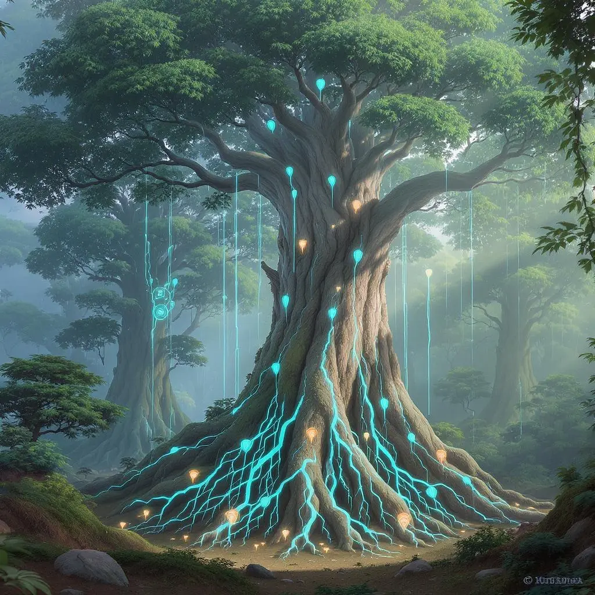

Fun-Gus doesn't approximate science. It embeds it. Every character, every ability, every story beat grows from verified biology.

Who did it first?
| Fungal Network | vs. | Human Internet |
|---|---|---|
| Mycelium threads | ↔ | Fiber optic cables |
| Tree root connections | ↔ | Computers & servers |
| Chemical signals | ↔ | Data packets |
| Nutrient sharing | ↔ | File sharing |
| Warning messages | ↔ | Alert notifications |
| Mother trees (hubs) | ↔ | Data centers |
| Spores | ↔ | Wireless signals |
| 450+ million years old | ↔ | ~50 years old |
of all plants connected by fungal networks
of a tree's carbon shared through the network
of mycelium in one teaspoon of soil
Real biology becomes unforgettable through character and narrative.
Mycorrhizal networks connect tree roots to fungal threads, enabling nutrient exchange and chemical communication across entire forests. This is the Sillium.
Over 80 fungal species glow in the dark. The light likely attracts insects for spore dispersal. In Fun-Gus, Lumos gets brighter when scared — lighting the way for everyone.
Fungi use dozens of methods to spread spores: explosive release (puffballs launch 7 trillion), raindrop catapults (bird's nest fungi), wind, water, and insect carriers.
Ink cap mushrooms dissolve their own caps into black liquid to help disperse spores. This real process inspired Inky — who uses herself up to write down what matters.
Oyster mushrooms produce microscopic lasso-loops that capture nematodes. The loop tightens in under a second. The mushroom digests the worm for nitrogen.
Trees send chemical warnings through fungal threads when attacked. Neighbors produce defensive compounds before insects arrive. Stinkhorns use smell to attract insect spore-carriers.
Older trees send extra sugar and nutrients to struggling seedlings through the fungal network — especially their own offspring. Discovered by Dr. Suzanne Simard.
Rhizobium bacteria in root nodules convert atmospheric nitrogen into forms plants can use. Without them, most terrestrial ecosystems would collapse. ~200 million tons fixed per year.
Cyanobacteria created Earth's oxygen atmosphere 2.4 billion years ago. They are the reason aerobic life exists. Cyano is the most ancient character in Fun-Gus — 3.5 billion years old.
Fun-Gus aligns with NGSS standards across multiple grade bands.
| Subject Area | Topics Covered | NGSS Alignment |
|---|---|---|
| Life Science | Ecosystems, interdependent relationships, structure & function | K-LS1, 2-LS4, 5-LS2 |
| Earth Science | Soil composition, nutrient cycles, deep time | 2-ESS1, 4-ESS2 |
| Technology | Network systems, communication, signal processing | Cross-cutting: Systems |
| Social-Emotional | Cooperation, belonging, courage, identity | SEL integration |